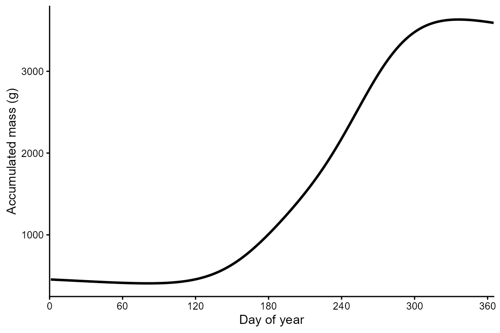
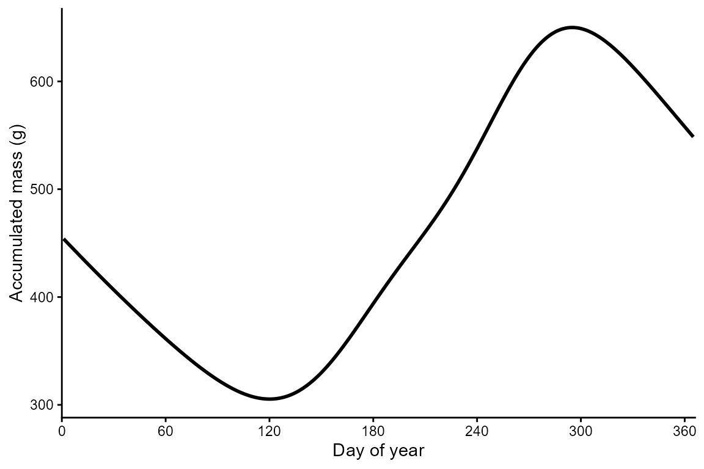
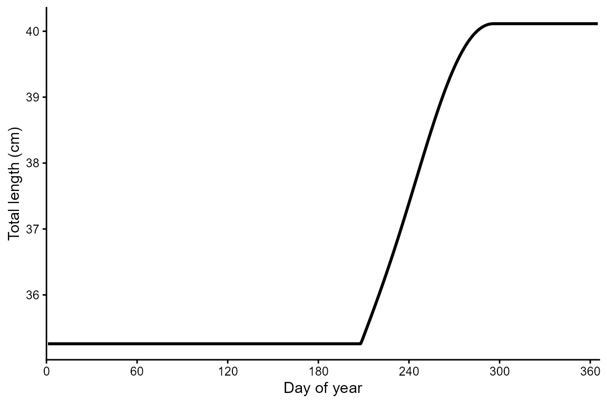

2) Grow a fish!
First, simulate (i.e., create a fake) temperature time series with
mean daily water temperature for every day of a calendar year. We do
this using a sine wave function, setting mean annual temperature and
annual amplitude to values that are realistic for a temperate waterbody
that does not ice over during the winter.
parm.tmean <- 16 # mean annual temperature
parm.ampli <- 13 # temperature amplitude
julian <- seq(1,365,1)
WT_mean <- parm.ampli * sin((2*(pi/365)) * julian - 2) + parm.tmean
temps_fake <- data.frame(julian, WT_mean)
Plot the time series of mean daily water temperature.
ggplot(NULL) + theme_classic() +
labs(x = "Day of year", y = "Water temperature (°C)") +
scale_x_continuous(expand = c(0,0), limits = c(0,366), breaks = seq(0, 360, 60)) +
scale_y_continuous(expand = c(0,0), limits = c(0,40), breaks = seq(0, 40, 10)) +
geom_line(aes(x = julian, y = WT_mean), temps_fake, linewidth = 1)
Next, use the bem_grow function to simulate the daily bioenergetic
budget of a largemouth bass. We need to load some parameters that
potentially vary temporally. The dataframe has 365 rows representing
each day of the year. There are five noteworthy columns (i.e.,
variables):
CP is the proportion of maximum consumption and decrease as prey
quantity declines or as exploitative competition increases.
ACT is the activity multiplier where a value of zero would indicate
no metabolic costs beyond being at rest. Maintaining position in a
flowing stream, avoiding predators, pursuing prey, and engaging in
reproductive behavior increase ACT.
The next two parameters (gsi_f and gsi_m) allow the user to model
somatic growth of a reproductively mature fish that allocates some
energy to gonadal tissue. Separate parameters are provided for females
and males because the sexes invest different amounts of energy to their
gonads–gsi_f and gsi_m, respectively. The default data assume a
reproductively immature fish (i.e., gsi = 0).
Modifying prey energy density (prey_ED) over the year can simulate
ontogenetic diet shifts or changes in prey quality. There are numerous
published estimates of prey energy density for common prey items like
invertebrates, fish, and so on.
options(width = 500)
data(parms_temporal_DEFAULT)
dim(parms_temporal_DEFAULT)
#> [1] 365 6
head(parms_temporal_DEFAULT)
#> date CP ACT gsi_f gsi_m prey_ED
#> 1 1/1/2025 1 1 0 0 3698
#> 2 1/2/2025 1 1 0 0 3698
#> 3 1/3/2025 1 1 0 0 3698
#> 4 1/4/2025 1 1 0 0 3698
#> 5 1/5/2025 1 1 0 0 3698
#> 6 1/6/2025 1 1 0 0 3698
Next, use the bem_grow function to simulate the daily bioenergetic
budget of a largemouth bass. Start the fish at 454 grams which is ~1
pound. We need to load some parameters that potentially vary
temporally.
grow.micsal <- bem_grow(start_M2 = 454,
temperature = temps_fake,
parms.intrinsic = parms.micsal,
parms.temporal = parms_temporal_DEFAULT,
C_eq = 2,
R_eq = 1)
The output of bem_grow is quite extensive. There are 365 rows
representing each day of the year and 43(!) variables. Let’s have a look
at those variables:
The first eight variables represent inputs that you’re already
familiar with like temperature, CP, ACT, gsi, and so on.
The remaining variables are outputs including consumption (C),
respiration (R), egestion (F), excretion (U), specific dynamic action
(SDA), somatic mass (MS), and gonadal mass for females and males
(MG).
The “1” version of these variables are in units of energy (joules)
and the “2” version of these variables are in units of mass (grams). The
“_ins” version of these variables represents instantaneous (i.e., daily)
values and the “_cum” represents cumulative values (i.e., since January
1st).
Finally, cumulative length (L_cum) and Fulton condition factor (K)
are calculated from the length-weight parameters in parms_fb4. Survival
(Surv) is assumed to start at 1 on January 1st and remains 1 if Fulton
condition factor remains at or above 0.4 but switches to 0 if K falls
below 0.4.
options(width = 500)
head(grow.micsal)
#> julian WT_mean pred_ED gsi_m gsi_f CP ACT prey_ED C1_ins C2_ins R1_ins R2_ins F1_ins F2_ins U1_ins U2_ins SDA1_ins SDA2_ins MS1_ins MS2_ins MG1_ins MG2_ins M1_ins M2_ins C1_cum C2_cum R1_cum R2_cum F1_cum F2_cum U1_cum U2_cum SDA1_cum SDA2_cum MS1_cum MS2_cum MG1_cum MG2_cum M1_cum M2_cum L_cum K Surv
#> 1 1 4.1 4184 0 0 1 1 3698 0.000 0.000 0.000 0.000 0.000 0.000 0.000 0.000 0.000 0.000 0.000 0.000 0 0 0.000 0.000 0.000 0.000 0.000 0.000 0.000 0.000 0.000 0.000 0.000 0.000 0.000 454.000 0 0 0.000 454.000 35.2587 NA NA
#> 2 2 4.0 4184 0 0 1 1 3698 1.537 5682.363 0.490 6640.852 0.160 590.966 0.135 501.014 0.218 806.885 -2857.354 -0.683 0 0 -2857.354 -0.683 1.537 5682.363 0.490 6640.852 0.160 590.966 0.135 501.014 0.218 806.885 -2857.354 453.317 0 0 -2857.354 453.317 35.2587 1.034197 1
#> 3 3 3.9 4184 0 0 1 1 3698 1.515 5601.397 0.488 6616.928 0.158 582.545 0.134 493.875 0.215 795.388 -2887.338 -0.690 0 0 -2887.338 -0.690 3.051 11283.760 0.978 13257.779 0.317 1173.511 0.269 994.889 0.433 1602.272 -5744.692 452.627 0 0 -5744.692 452.627 35.2587 1.032623 1
#> 4 4 3.8 4184 0 0 1 1 3698 1.494 5524.576 0.486 6593.751 0.155 574.556 0.132 487.102 0.212 784.479 -2915.312 -0.697 0 0 -2915.312 -0.697 4.545 16808.336 1.464 19851.531 0.473 1748.067 0.401 1481.991 0.645 2386.751 -8660.004 451.930 0 0 -8660.004 451.930 35.2587 1.031033 1
#> 5 5 3.8 4184 0 0 1 1 3698 1.474 5451.794 0.485 6571.325 0.153 566.987 0.130 480.685 0.209 774.144 -2941.347 -0.703 0 0 -2941.347 -0.703 6.020 22260.130 1.949 26422.856 0.626 2315.054 0.531 1962.676 0.855 3160.896 -11601.351 451.227 0 0 -11601.351 451.227 35.2587 1.029429 1
#> 6 6 3.7 4184 0 0 1 1 3698 1.456 5382.949 0.483 6549.651 0.151 559.827 0.128 474.615 0.207 764.368 -2965.511 -0.709 0 0 -2965.511 -0.709 7.475 27643.079 2.432 32972.507 0.777 2874.880 0.659 2437.290 1.061 3925.264 -14566.863 450.518 0 0 -14566.863 450.518 35.2587 1.027812 1
Plot the time series of m2_cum. This is the cumulative mass of the
predator fish in grams. Notice that our largemouth bass does most of its
growing during the warm summer months which makes sense for this
warmwater species. What doesn’t make sense is that this fish starts the
year at 454 grams (~1 pound) and ends the year at a whopping 3,592 grams
(7.9 pounds)!
This is because we unrealistically have assumed the predator fish has
limitless food (CP = 1), sets up shop in one place and never moves (ACT
= 1), and allocates no energy to reproduction (gsi_ = 0).
The bem_validate function provides a means of estimating
difficult-to-measure parameters like CP and ACT using field- or
lab-derived measurements of length-at-age to identify pairs of CP and
ACT values that result in realistic end-of-year mass. See the Validation
vignette to learn this workflow.
ggplot(NULL) + theme_classic() +
labs(x = "Day of year", y = "Accumulated mass (g)") +
scale_x_continuous(expand = c(0,0), limits = c(0,365), breaks = seq(0,360,60)) +
geom_line(aes(x = julian, y = M2_cum), grow.micsal, linewidth = 1)

To better visualize this summer growth, plot m2_ins. The horizontal
red line is at y = 0, meaning that the predator fish has an energy
deficit below this line (winter) and an energy surplus above this line
(summer).
ggplot(NULL) + theme_classic() +
labs(x = "Day of year", y = "Daily mass change (g)") +
scale_x_continuous(expand = c(0,0), limits = c(0,366), breaks = seq(0, 360, 60)) +
geom_hline(yintercept = 0, color = "red") +
geom_line(aes(x = julian, y = M2_ins), grow.micsal, linewidth = 1)
Let’s manually adjust CP and ACT to see how it affects growth. If dig
into the literature, CP values are often around 0.6 and ACT values are
often around 1.4. Change these values in the parms_temporal_DEFAULT
dataframe, re-run the bem_grow function, and then re-plot growth. It
seems reasonable that a 454 gram fish would grow to 548 grams in a
year–that is, from 1.0 pounds to 1.2 pounds.
parms_temporal_DEFAULT$CP <- 0.6
parms_temporal_DEFAULT$ACT <- 1.4
grow.micsal.real <- bem_grow(start_M2 = 454,
temperature = temps_fake,
parms.intrinsic = parms.micsal,
parms.temporal = parms_temporal_DEFAULT,
C_eq = 2,
R_eq = 1)
ggplot(NULL) + theme_classic() +
labs(x = "Day of year", y = "Accumulated mass (g)") +
scale_x_continuous(expand = c(0,0), limits = c(0,366), breaks = seq(0, 360, 60)) +
geom_line(aes(x = julian, y = M2_cum), grow.micsal.real, linewidth = 1)

Finally, let’s look at how mass, length, and condition change over
time. Bioenergetics models are biologically realistic in that they
simulate daily energy balance–that is, either deficits or surpluses.
Mass can decrease or increase over time whereas length can increase with
energy surpluses but cannot realistically decrease when there are energy
deficits. The bem_grow function uses this axiom to simulate changes in
Fulton condition factor over time as demonstrated below:
The previous plot shows that the mass of the predator fish starts at
454 grams on January 1st and decreases for 120 (until ~April). The
predator fish then grows in both mass and length until day 290
(~October). Plot length (cm) over time to see how length does not change
during periods of energy deficit and increases when there is an energy
surplus.
ggplot(NULL) + theme_classic() +
labs(x = "Day of year", y = "Total length (cm)") +
scale_x_continuous(expand = c(0,0), limits = c(0,366), breaks = seq(0, 360, 60)) +
geom_line(aes(x = julian, y = L_cum), grow.micsal.real, linewidth = 1)

When mass decreases and length stays the same, Fulton condition
should decrease.
ggplot(NULL) + theme_classic() +
labs(x = "Day of year", y = "Fulton condition") +
scale_x_continuous(expand = c(0,0), limits = c(0,366), breaks = seq(0, 360, 60)) +
geom_line(aes(x = julian, y = K), grow.micsal.real, linewidth = 1)